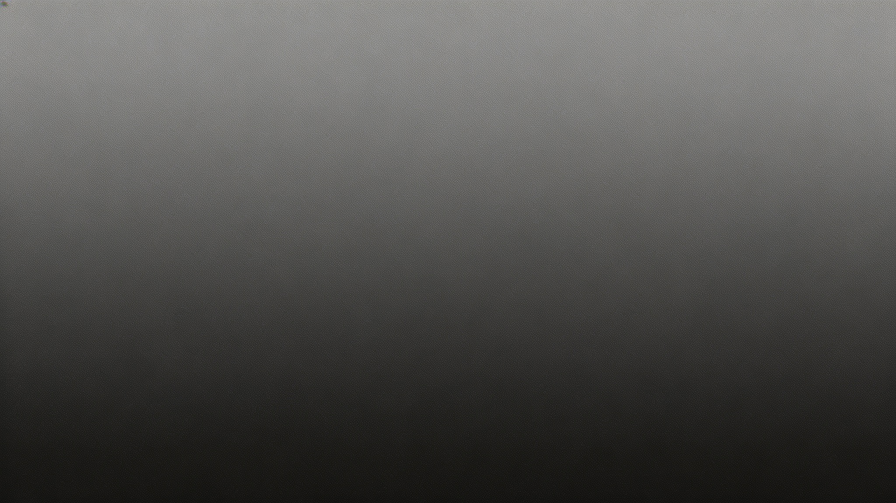

02. 底层原理完整拆解

四层架构，由下往上逐层解析
01 内核适配层
对接硬件驱动与底层协议，实现硬件资源的高效调度与隔离，是整个架构稳定运行的坚实基石。
02 组件核心层
封装核心媒体处理算法，提供标准化的编解码接口，支撑上层业务对音视频数据的灵活处理与转换。
03 框架服务层
负责组件间的通信调度与生命周期管理，构建稳定的进程间交互桥梁，保障数据流转的高效与安全。
04 应用接口层
面向开发者的统一接入层，提供简洁易用的API与开发工具，快速赋能上层多媒体应用的开发迭代。